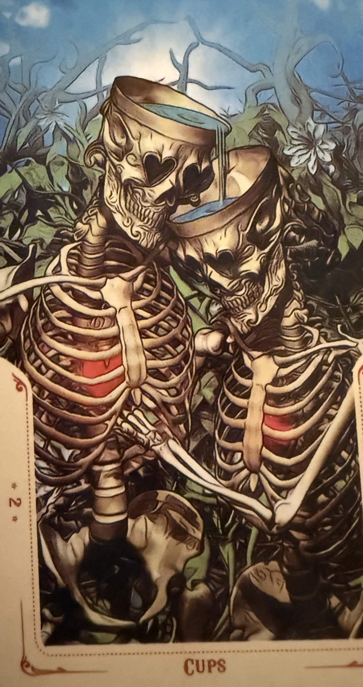

You Made IT!

Two cups meet, not just to toast,
To heal each other, what hurt the most.
Once lost in drink, in shadowed pain,
Now finding light through love again.
This bond we share - a mirror, true.
To forge a path from old to new.
What's something that you're working on accepting?
Or, something that you're proud of accepting recently?